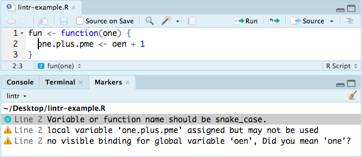

By Martin John Hadley | February 9, 2018
Citable Author
Martin John Hadley
( orcid.org/0000-0002-3039-6849)
orcid.org/0000-0002-3039-6849)
Citable Data
None used.
 .Rmd on GitHub
.Rmd on GitHubWriting reproducible code is hard. Ensuring code is legible and easy to understand is another feat in itself. That’s why it’s important for folks to follow well established code style guides whether developing packages, writing single use code or even blogposts. As I insist on teaching best practices in all my training courses, it would be remiss of me not to follow my own advice when writing for this blog and elsewhere. This post has a pre-publication checklist at the bottom that I run through before publishing (or at least promoting content!), it’s split into the following sections:
- Code Style Guides
- Data Visualisation Style Guides
- Accessibility Style Guides
Code Style Guides
In the #rstats community there’s pretty much a defacto coding standard, the code styles of RStudio which have recently been officially named the tidyverse style guide. Listing all of the myriad rules and best practices from the style guide is not only tedious it’s really difficult to apply these rules ourselves to script files that are 100+ lines of code. Thankfully there are two awesome tools developed by RStudio that help make our lives easier:
styler: effectively all this package does is re-indent your code files to conform to the tidyverse style guide. Install the package by runninginstall.packages("styler")in your console. This will also install a number of Addins to RStudio (What are Addins?) that can be used as shown in this GIF taken from the https://github.com/r-lib/styler repository.

lintr: analyses your code for non-conformity to the tidyverse style guide and provides advice on changes you should make. As of early February 2018, the CRAN-hosted version of the package does not have the RStudio Addins. I’m using the development version which is installed usingdevtools::install_github("jimhester/lintr"). ThelintrAddin can then be used on saved files, including .Rmd files 😄

Excitingly, RStudio are currently overhauling the error messages in their packages to confirm to the highly aspirational tidyverse error message style guide. Why is this exciting? Well, there’s an emphasis on providing concise human readable errors which should make it much easier to spot where and what errors are.
## Old error message
tibble(x = 1:2, y = 1:3, z = 1)
#> Error: Column `x` must be length 1 or 3, not 2
## New error message
tibble(x = 1:2, y = 1:3, z = 1)
#> Error: Columns must have consistent lengths:
#> * Column `x` has length 2
#> * Column `y` has length 3When I’m developing my own packages I’ll also follow these guidelines, but these are the only items I’ll add to my checklist from the tidyverse style guide:
Run the styler RStudio Addin on code chunks before publishing content
Run the lintr RStudio Addin on .Rmd files before publishing and correct all non-conformities
Unfortunately, there are some things that the tidyverse style guide doesn’t include that we really should consider when publishing RMarkdown files.
Name every single code chunk to assist in debugging
Where code chunks have the option include=FALSE ensure a comment is included to explain why.
Data Visualisation Style Guides
I’m a co-founder of the oxshef: dataviz initiative, which promotes and supports the use of interactive visualisations for communicating research datasets and outputs. One of the core goals of the initiative is to advise researchers on the best data visualisation choice for their data, and to avoid common pitfalls in designing dataviz through our oxshef: charts site.
There are quite a few accepted wisdoms in the field of dataviz, but it’s good to take some of them with a pinch of salt:
Never use a rainbow colour scheme. Actually, this one doesn’t need any salt. It’s always a bad idea to use rainbow colour schemes, #endtherainbow colour scheme.
All pie charts can and should be replaced with bar charts. Though, there are some ways that pie charts can be improved and graphical perception theory explanations of why pie charts are bad might not be reliable.
Chart junk should be reduced at all costs has been recommended by experts since Edward Tufte in the 1980s. Modern charting guides have pulled back in a few directions when it comes to minimalism, with the introduction of direct labeling amongst other recommendations.
I’m not going to transplant all of the advice from oxshef: charts to this blogpost, as that would be ridiculous. Instead I’ll add a few explicit items to my personal style guide:
If not direct labeling, order legends so
Styles are important! One of my early blogposts was fairly popular but I just after I’d promoted it that the legend order was bad!
- Compare original to current
So I decided to create a style guide.
Accessibility Style Guides
https://accessibility.blog.gov.uk/2016/09/02/dos-and-donts-on-designing-for-accessibility/
I’m a blind twitter user. There are a lot of us out there. Increase your ability to reach us and help us interact with your pictures, it’s really simple and makes a huge difference to our twitter experiance allowing us to see your images our way. Thanks for the description 😎 pic.twitter.com/hCsjoFdmev
— Rob Long (@_Red_Long) January 3, 2018
The Hugo Theme currently used by the blog is the devcows/hugo-universal-theme which is largely well designed and supports mobile devices thanks to Boostrap. Bootstrap is a framework for building responsive web pages, content reflows as the browser window changes in size. This means a lot of work has been done for me on making the site accessible.
However, the default font size of 14px for text in the site does not adhere to current ideas about
The default font size of the devcows theme is too small for readability.
I switched it up to 16x.
Checklist
- Check all code chunks have names
- Check all legends are sensibly ordered
- Check Twitter handles in Markdown links have been escaped, i.e. \[\@martinjhnhadley\]
Pre-publication Checklist
Code Checks
Run the `styler` RStudio Addin on code chunks before publishing contentRun the `lintr` RStudio Addin on .Rmd files before publishing and correct all non-conformities
Data Viz Checks
Run the `styler` RStudio Addin on code chunks before publishing contentRun the `lintr` RStudio Addin on .Rmd files before publishing and correct all non-conformities
Accessibility Checks
Spelling and Grammar checkRun the `styler` RStudio Addin on code chunks before publishing content
Run the `lintr` RStudio Addin on .Rmd files before publishing and correct all non-conformities